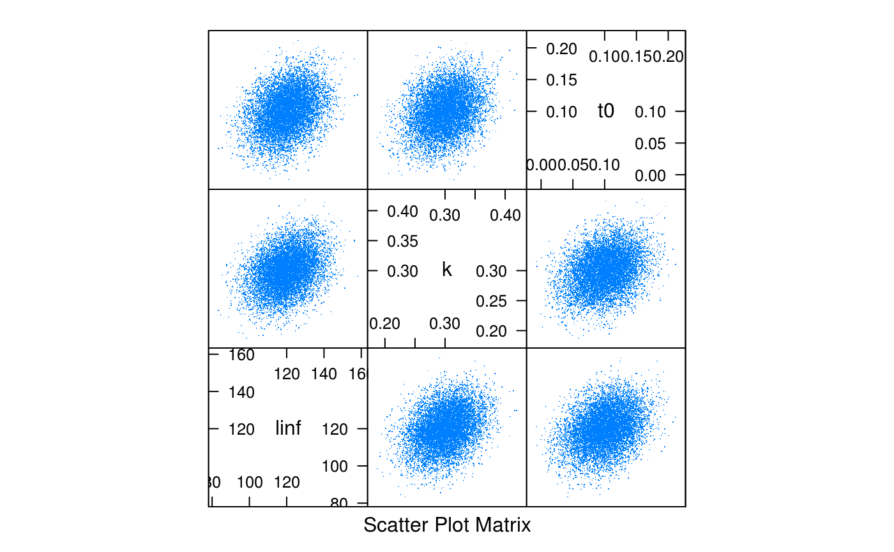
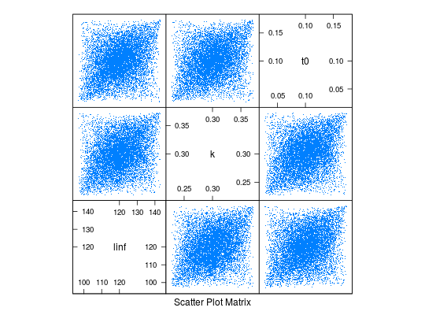
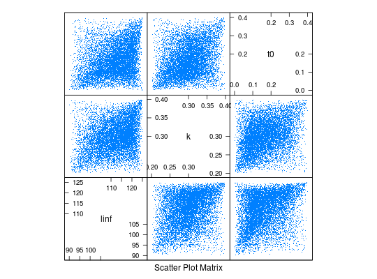

Simulates model parameters using elliptical copulas and triangular marginals.
mvrtriangle(n, object, ...) # S4 method for numeric,FLModelSim mvrtriangle(n = 1, object, ...)
FLModelSim objectan FLModelSim object with n sets of parameters
# Set up the FLModelSim object mm <- matrix(NA, ncol=3, nrow=3) diag(mm) <- c(100, 0.001,0.001) mm[upper.tri(mm)] <- mm[lower.tri(mm)] <- c(0.1,0.1,0.0003) md <- ~linf*(1-exp(-k*(t-t0))) prs <- FLPar(linf=120, k=0.3, t0=0.1, units=c("cm","yr^-1","yr")) vb <- FLModelSim(model=md, params=prs, vcov=mm, distr="norm") # Simulate from a multivariate normal distribution... set.seed(1) vbSim <- mvrnorm(10000, vb) mm <- predict(vbSim, t=0:20+0.5) #...from a multivariate triangular distribution with default ranges (0.01 and # 0.99 quantiles for min and max using a normal distribution with mean from # params and sigma from vcov, and with the apex located at params)... set.seed(1) vbSim1 <- mvrtriangle(10000, vb) mm1 <- predict(vbSim1, t=0:20+0.5) #...and from a multivariate triangular distribution with specified ranges # (note if "c" is missing, it will take the average of "a" and "b") set.seed(1) pars <- list(list(a=90, b=125, c=120), list(a=0.2, b=0.4), list(a=0, b=0.4, c=0.1)) vbSim2 <- mvrtriangle(10000, vb, paramMargins=pars) mm2 <- predict(vbSim2, t=0:20+0.5) # Plot the results par(mfrow=c(3,1)) boxplot(t(mm), main="normal") boxplot(t(mm1), main="triangular") boxplot(t(mm2), main="triangular2")splom(data.frame(t(params(vbSim)@.Data)), pch=".")splom(data.frame(t(params(vbSim1)@.Data)), pch=".")splom(data.frame(t(params(vbSim2)@.Data)), pch=".")